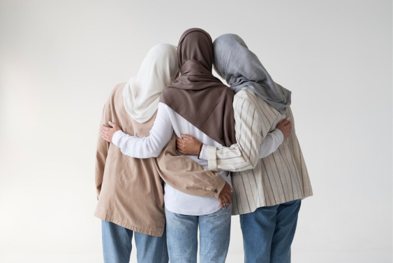

Hijrah Membawa Keberkahan bagi Para Pemuda
Selasa 14 November 2023, 15.41 WIB
Hijrah menjadi perjalanan spiritual yang membawa keberkahan bagi para pemuda. Ini bukan sekadar perubahan fisik, melainkan transformasi dalam jiwa dan perilaku. Saat pemuda memutuskan untuk hijrah, mereka melangkah menuju jalan yang penuh keberkahan,
menukar kebiasaan negatif dengan kebiasaan positif, serta meningkatkan hubungan spiritual dengan Tuhan. Hijrah memberikan kesempatan bagi mereka untuk menemukan arti hidup yang lebih dalam dan menumbuhkan kualitas diri yang lebih baik.
Penting untuk memahami bahwa menjalankan hijrah membutuhkan istiqamah, yaitu konsistensi dan keteguhan hati dalam menjalankan perubahan. Untuk mempertahankan istiqamah dalam hijrah, para pemuda dapat mengikuti beberapa tips. Pertama, perlu
memiliki niat yang tulus dan kuat. Niat yang tulus menjadi landasan utama dalam menjalankan hijrah dengan konsistensi. Kedua, penting untuk memiliki pemahaman yang mendalam akan manfaat hijrah dan kesungguhan untuk memperbaiki diri. Pemahaman
ini akan memperkuat tekad dalam menghadapi rintangan.
Selain itu, penting pula bagi pemuda untuk memiliki lingkungan yang mendukung. Menyertai komunitas atau kelompok yang memiliki tujuan serupa dalam hijrah akan memberikan dukungan
moral dan semangat untuk terus istiqamah. Selanjutnya, jadwalkan evaluasi diri secara rutin. Dengan melakukan introspeksi secara berkala, para pemuda dapat melihat perkembangan diri mereka dalam menjalankan hijrah dan menyesuaikan langkah-langkah
ke depannya.
Tidak kalah pentingnya, jaga komunikasi yang baik dengan Allah SWT. Doa, dzikir, dan ketaatan kepada-Nya akan menjadi kekuatan spiritual yang mendukung istiqamah dalam hijrah. Terakhir, jadilah sabar dan tidak putus asa.
Proses hijrah tidak selalu mulus, namun dengan kesabaran, pemuda dapat mengatasi rintangan dan terus bergerak maju menuju keberkahan yang dijanjikan dalam perjalanan hijrah mereka. Dengan istiqamah yang teguh, hijrah akan menjadi sarana yang
membawa keberkahan bagi para pemuda dalam menjalani kehidupan mereka.
Saat menjalani hijrah, perlu diingat bahwa proses perubahan bukanlah hal yang instan. Istiqamah membutuhkan ketekunan dan kesabaran. Kegagalan mungkin terjadi di
sepanjang jalan, namun hal ini bukanlah akhir dari segalanya. Setiap langkah kecil yang diambil menuju perubahan positif adalah bagian dari perjalanan yang bernilai. Dengan terus menjaga komitmen dan kesungguhan dalam menjalankan hijrah, pemuda
akan mengalami pertumbuhan spiritual yang mendalam dan membawa keberkahan dalam kehidupan mereka serta bagi sekitar mereka.